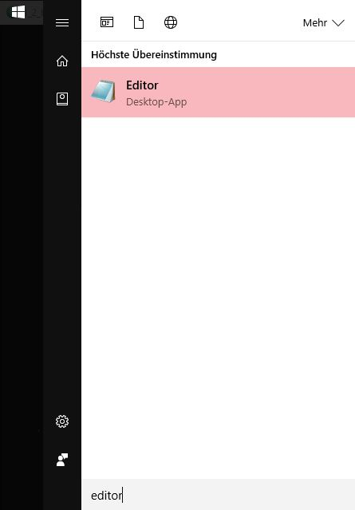
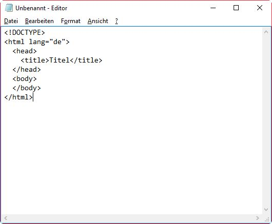
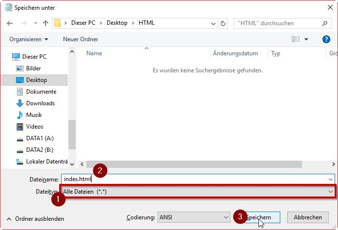
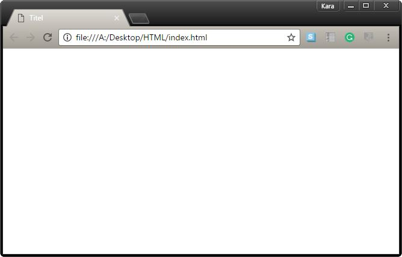

Was ist HTML?
HyperText - Markup - Language
Hypertext Auszeichungssprache
Aktuelle Version: HTML 5
Eine einfache HTML-Seite
<!DOCTYPE html>
<html lang="en">
<head>
<meta charset="utf-8">
<title>HowToWeb2.0</title>
</head>
<body>
<h1>Überschrif</h1>
<p>Abschnitt</>
</body>
HTML Tags
HTML-Elemente werden durchTagsgekennzeichnet:
<tagname>Content</tagname>
Der Inhalt eines Elements wird eingerahmt von einem Starttag: <tag>Und einem Endtag: </tag>
Das Endtag (Auch: "opening tag") besitz im Gegensatz zum Starttag (Auch "closing tag") einen Schrägstrich / (engl.: "slash" oder "forward slash")
Aufbau eines HTML Dokuments
index.html
<!DOCTYPE html>
<html lang="en">
<head>
<title>HowToWeb2.0</title>
</head>
<body>
Überschrift
Absatz Nummmer eins
Und noch ein Absatz
</body>
</html>
Überschrift
Absatz Nummer eins
Und noch ein Absatz
SelfHTML



